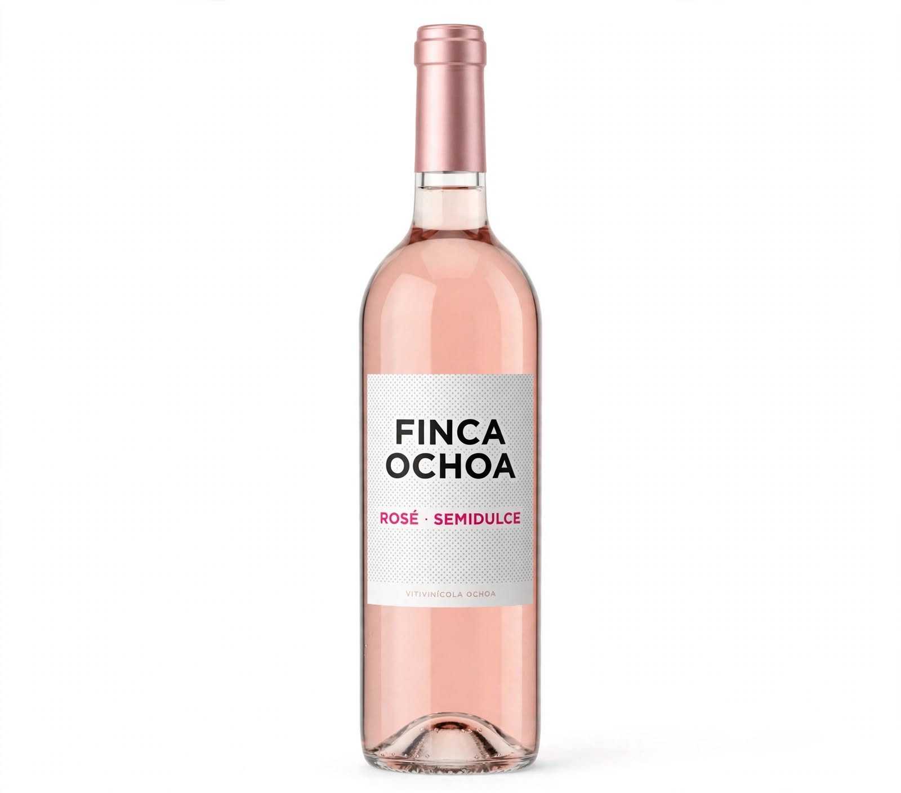
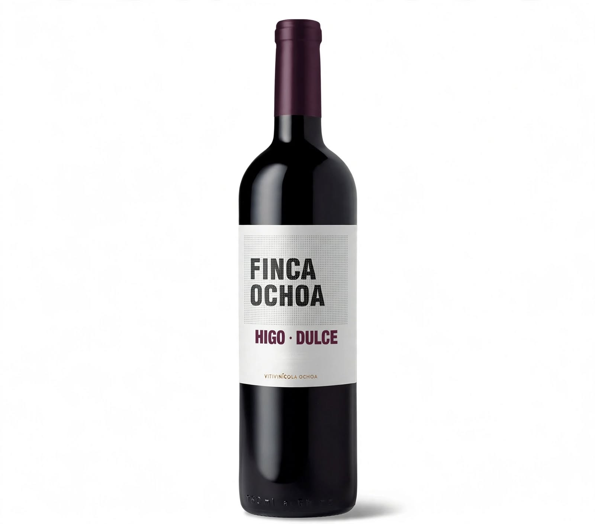
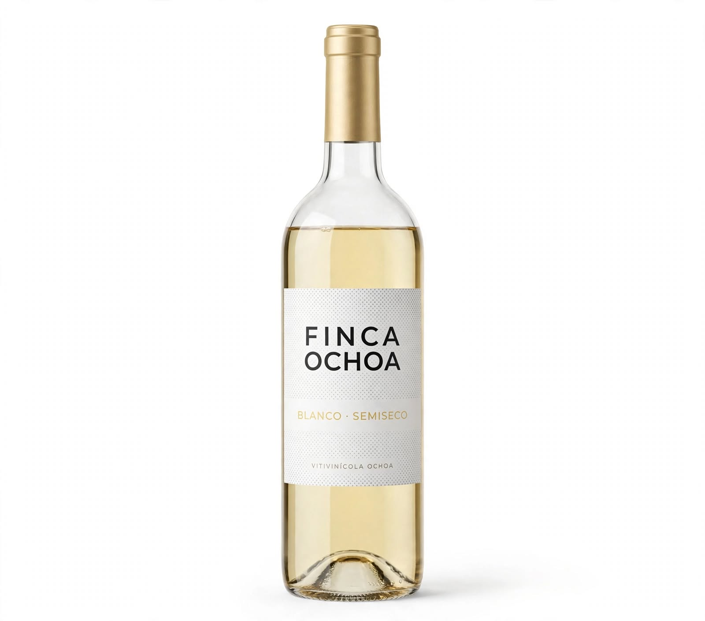
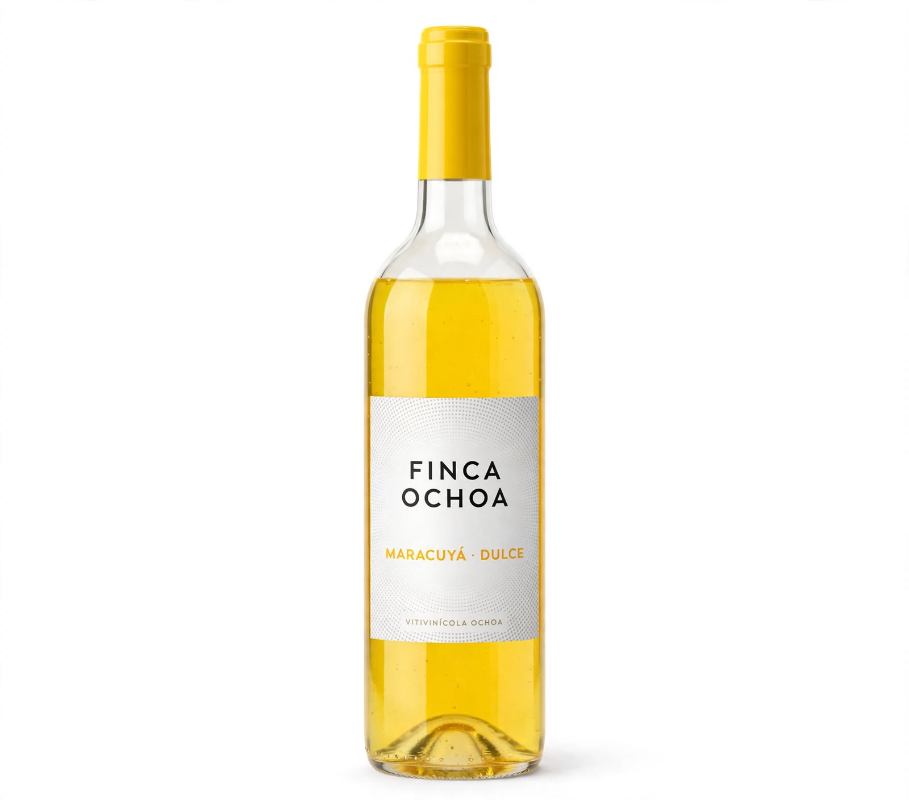

Desde 1997 - Valle de Lunahuana
El sabor de Lunahuana en cada botella
En Finca Ochoa reunimos seis variedades de vinos artesanales inspiradas en el valle de Canete. Descubre sus sabores y encuentra una opcion para compartir.
Presentacion de 750 ml - 6 variedades
6 variedadesSabores dulces y semisecos
750 mlPresentacion por botella
LunahuanaProvincia de Canete, Peru
Nuestro catalogo
Seis sabores para descubrir
Conoce cada variedad y consulta en la pagina de contacto por disponibilidad y visitas.





Nuestra historia
Una tradicion familiar en Canete
Desde 1997, Finca Ochoa comparte una propuesta vitivinicola ligada a Lunahuana y al trabajo familiar.
Conocer masAtencion directa
Tienes una consulta?
Escribenos para preguntar por variedades, visitas y como conocer la finca.
Ir a contactoPara aprender
Videos sobre la elaboracion del vino
Selecciona una miniatura para ver el video en YouTube. Se necesita conexion a internet.


Ayuda
Preguntas frecuentes
Que variedades tienen?
Seis variedades: Borgona Dulce, Rose Semidulce, Higo Dulce, Quebranta Semiseco, Blanco Semiseco y Maracuya Dulce. Puedes filtrarlas en la pagina de Productos.
Puedo visitar la finca?
La vitivinicola se encuentra en Lunahuana, Canete. Coordina con anticipacion desde la pagina de contacto y solicita la direccion exacta.
Como cambio el modo oscuro o el tamano de letra?
Usa los botones del menu superior: Oscuro / Claro para el modo y A- / A+ para el tamano. Tu eleccion se guarda en tu navegador.